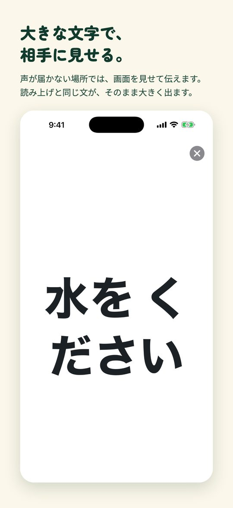
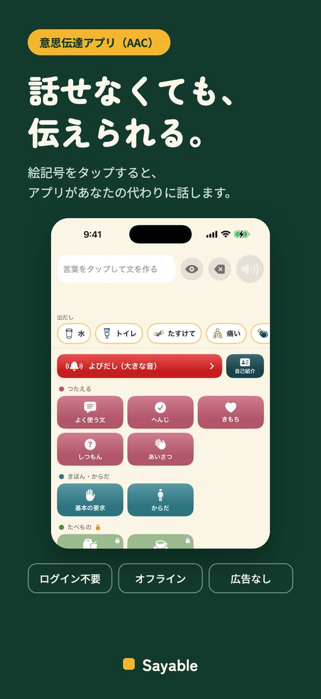
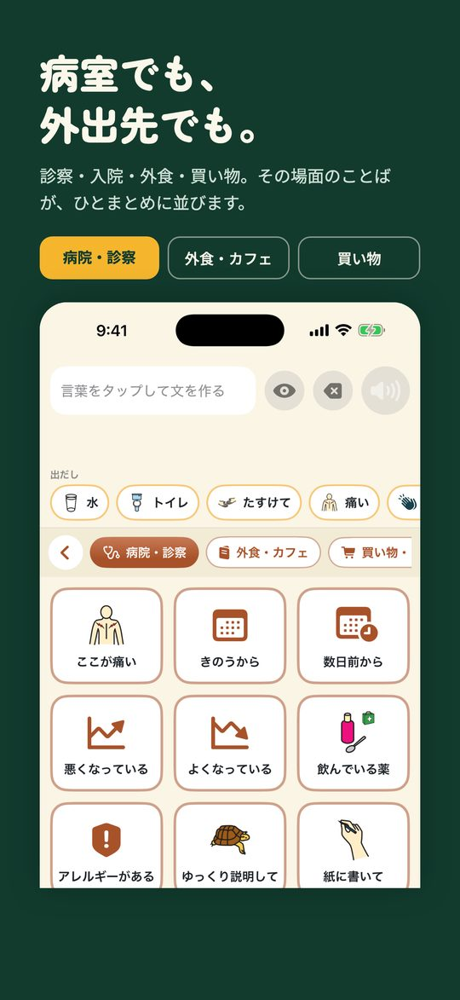
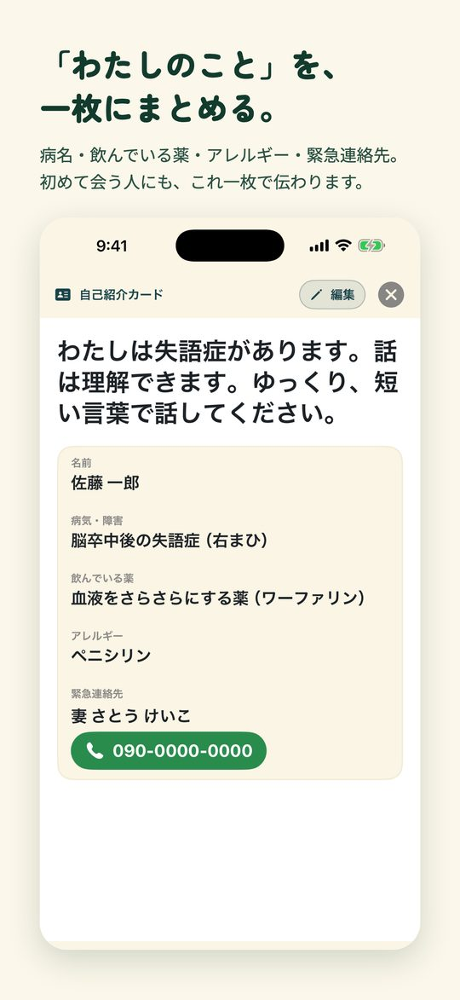
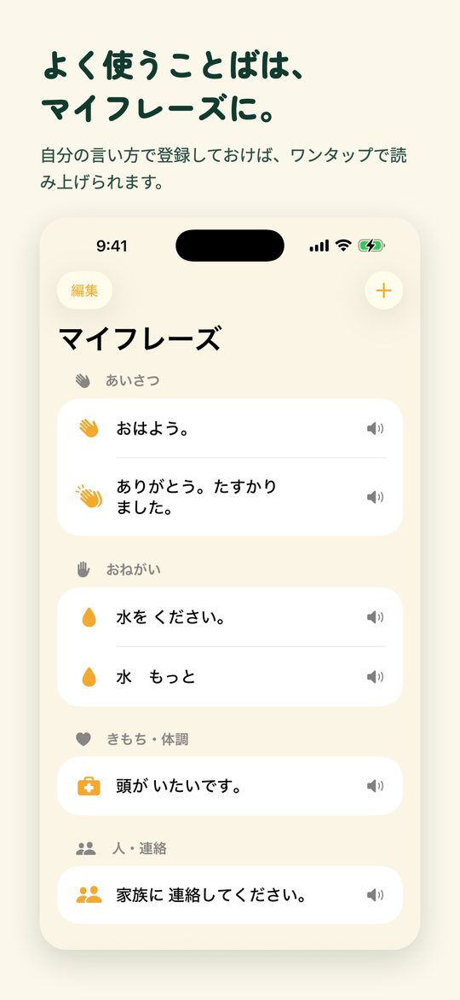
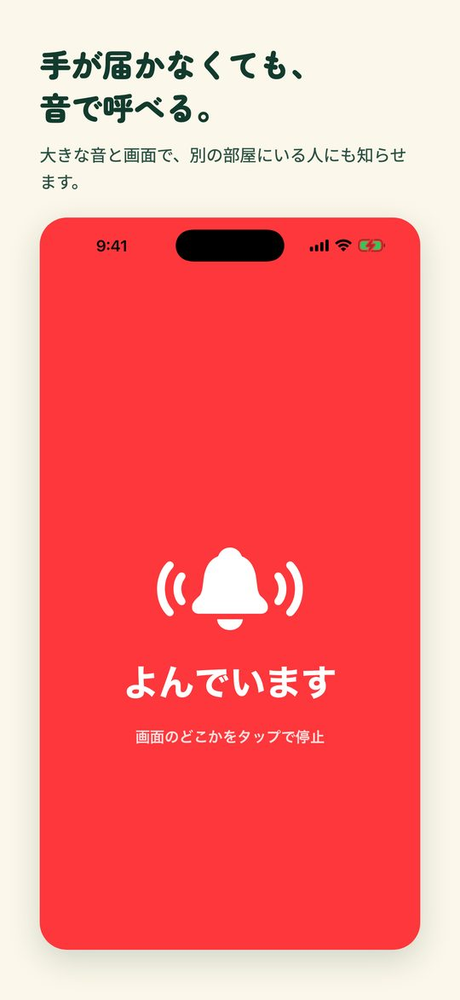
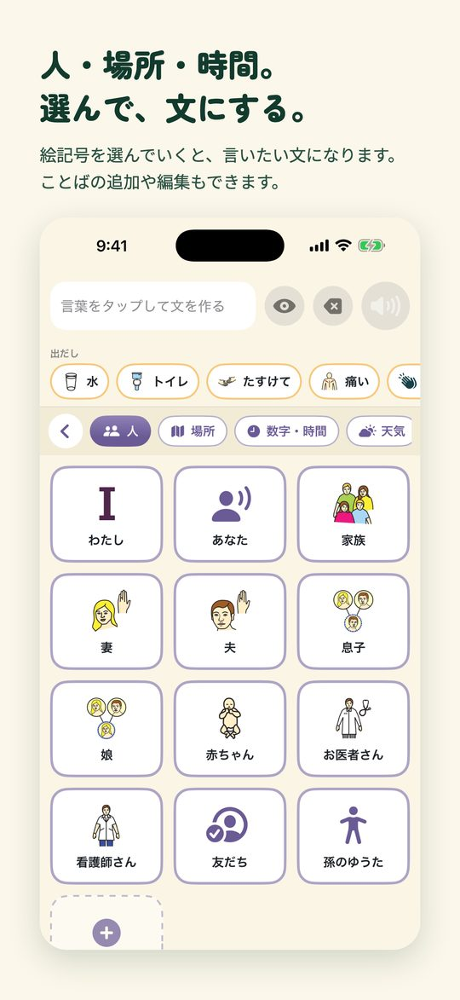
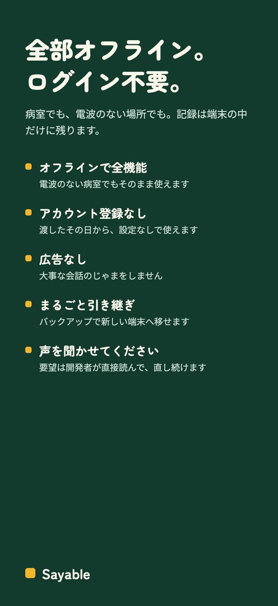

失語症・ALSの筆談ボード 代わりに喋る読み上げ
ご家族が脳梗塞やALS、入院中の気管切開などで話せなくなったとき。絵記号をタップするだけで、Sayableが代わりに声にします。無料ではじめられ、全部オフライン・ログイン不要・広告なし。
App Store からダウンロード無料でダウンロード。追加機能は買い切り（¥2,000）で解放できます。

「ここが痛い」「体の向きを変えて」
ことばを隠す・名前を変える・写真つきで追加する
「つたえる」「きほん・からだ」ボード、写真つき「自分のことば」1件、キーボード読み上げ、次のことば予測、よびだし、自己紹介カード、見せるモード、バックアップ







ご家族が脳梗塞やALSで、あるいは入院中に気管切開や人工呼吸器で、声が出せなくなったとき。Sayable（セイアブル）なら、絵記号をタップするだけで、アプリが代わりに声にします。
失語症・ALS・構音障害など、「話す」が難しくなった大人のための意思伝達アプリ（AAC）です。ログイン不要、むずかしい設定もありません。ご家族がその日のうちに渡して使いはじめられます。
Sayableは、いただいた声をもとに改善を続けているアプリです。「このことばを追加してほしい」「ここが使いにくい」など、小さなことでも設定画面からお送りください。開発者がすべて読み、アップデートに反映していきます。
絵記号: Mulberry Symbols（CC BY-SA）
無料でダウンロード。追加機能は買い切り（¥2,000）で解放できます。
お使いの iPhone の中にのみ保存されます。アカウント登録もログインも不要です。
iPhone（App Store から入手）。
メール suportapps44@gmail.com までご連絡ください。